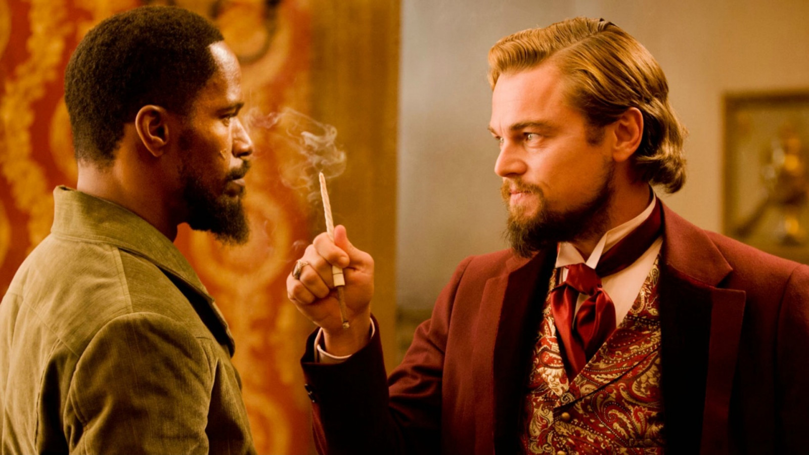

Django Unchained is a 2012 film directed by Quentin Tarantino
that brings the western genre into the 21st century. The film is set in the antebellum South and
follows the story of a freed slave named Django who sets out to rescue his wife from a brutal
plantation owner. The film is a thrilling and visceral depiction of the violence and injustices of
the era, and it’s a unique and unforgettable experience. The film’s impact on the film industry was
significant, as it showed that the western genre was not limited to the traditional confines of the
past. Django Unchained was a bold and innovative take on the western genre, and it used the conventions
of the genre to tell a story that was both historically accurate and emotionally powerful. The film’s
depiction of the antebellum South challenged conventional notions of the western genre, and it inspired
a new generation of filmmakers to take risks and push the boundaries of the genre. In addition to its
impact on the film industry, Django Unchained also had a significant impact on popular culture.
The film’s larger-than-life characters and memorable dialogue quickly became a part of the cultural
lexicon, and its depiction of the antebellum South and the injustices of slavery has inspired countless
other works of fiction. The film’s unique take on the western genre and its fearless approach to
storytelling have made it a cult classic, and it continues to be widely discussed and debated to
this day. Django Unchained was a critical and commercial success, and it received numerous awards and
nominations. The film was nominated for five Academy Awards, including Best Picture, and it won the award
for Best Supporting Actor for Christoph Waltz’s portrayal of Dr. King Schultz. The film’s success cemented
Quentin Tarantino’s reputation as a visionary filmmaker who is not afraid to take risks and challenge
conventions. In conclusion, Django Unchained is a film that pushes the boundaries of the western genre
and brings the genre into the 21st century. Its impact on the film industry and popular culture has been
substantial, and its legacy continues to be felt to this day. Whether you are a fan of westerns or just
enjoy great films, Django Unchained is a movie that should not be missed.